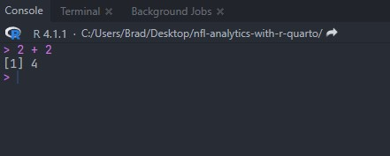

2 Wrangling NFL Data in the tidyverse
2.1 Downloading R and RStudio
Prior to downloading R and RStudio, it is important to explain the difference between the two, as they are separate pieces of our analytics puzzle that are used for differing purposes. R is the core programming language used for statistical computing and graphics. R provides a wide range of statistical and graphical techniques and has a large community of users who develop and maintain a multitude of packages (essentially libraries of pre-written functions) that extend the capabilities and ease of coding. While R can be run from your computer’s command line, it also has an integrated development environment (IDE) in RStudio that provides a graphical user interface for working with R scripts, data files, and packages.
RStudio is free to download and use and provides a user-friendly interface for writing R code, organizing projects and files, and working with both big and small data. Regularly updated by the Posit team, RStudio includes many features that are specifically designed to making working with R easier, including syntax highlighting, code suggestions, robust debugging tools, and a built-in package manager.
Important
It is important that you download and successfully install R before proceeding to install RStudio on your computer.
2.1.1 Downloading R
- To download R, visit the official R website at https://www.r-project.org/
- Click on the ‘CRAN’ link at the top of the page, directly underneath the word ‘Download.’ This will bring you to the Comprehensive R Archive Network.
- Each mirror that hosts a copy of R is sorted by country. Select a mirror that is geographically close to you.
- Click on the version of R that is appropriate for your operating system (Linux, macOS, or Windows).
- Select the ‘base’ option to download an updated version of R to your computer.
- Open the downloaded file and follow the provided installation instructions.
2.1.2 Downloading RStudio
- To download RStudio, visit the official RStudio website at https://posit.co
- Click on the ‘Download RStudio’ button in the top-right of the page.
- Scroll down and select ‘Download’ within the ‘RStudio Desktop - Free’ box.
- Open the downloaded file and follow the provided installation instructions.
2.1.3 The Layout of RStudio
When you open RStudio for the first time, you will see the interface laid out as in the picture below (sourced from the official RStudio documentation from posit).
As you can see, RStudio provides a graphical interface for working with R and is sorted into four main panes, each of which serves a specific purpose.
- The source pane: In the upper-left, the source pane is where you write and run your R code. It serves as the main working pane within RStudio.
- The console pane: the console pane serves multiple functions, including allowing you to interact directly with R by typing commands and receiving the output. Additionally, any errors outputted by code ran in the source pane will be detailed in the console, allowing you to troubleshoot and debug.
- Environment and history pane: this pane, in the upper-right, displays information about the current R environment and command history. Perhaps more important, it displays the information of all the R-created objects currently stored in your computer’s memory including data sets, vectors, lists, etc.
- Files, plots, packages, and help pane: in the bottom-right, this pane provides access to numerous RStudio tools and resources including the ability to browse and navigate through the files and folders on your computer and view the output of plots and graphics. As well, the ‘Packages’ tab gives you the ability to manage any R packages that you have installed on your system and to view each packages’ help documentation.
2.1.4 Running Code in RStudio
To begin writing code in RStudio you first need to open a new R script. To do so, select ‘File -> New File -> R Script.’ A new script tab, titled Untitled 1 will open in your RStudio’s source pane. To run a line of code - or multiple lines of code - you can do one of two options:
- Place your cursor directly at the end of the last line of code, or highlight all the code you wish to run, and press ‘Ctrl + Enter’ (Windows) or ‘Command + Enter’ (Mac).
- Place your cursor directly at the end of the last line of code, or highlight all the code you wish to run, and then use your mouse to click the ‘Run’ button in the source pane’s toolbar.
As a working example, let’s do a simple addition problem within the the source pane:
2 + 2After following one of the two above options for running the addition problem, the output in your console should appear like below:

Tip
It is important to notice the > after the output in the console. That indicates that the coding process has completely run and RStudio is ready to run the next task that you submit. If you have an error in your code, you will notice that the > is replaced by what my students refer to as the ‘hanging plus sign’, +.
You receive the + sign when RStudio is expecting a continuation of the code. Several issues can cause this to happen, including forgetting to provide an equal number of opening and closing parenthesis or mistakenly including a pipe, %>%, after the last line of code.
In any case, when you see the + in the console, simply use your mouse to click within the console and hit your keyboard’s escape key. Doing so exits the prompt and resets the console to include the > symbol.
2.2 Installing and Loading Necessary Packages
Installing and loading packages is an important part of working with RStudio, as they provide additional functionality that allow you to more efficiently conduct data analysis and/or modeling. Several packages are widely used through this book, including the ever-important tidyverse, the nflverse family of packages to retrieve NFL statistics and data, and many others such as tidymodels when we tackle building and testing advanced models in Chapter 5.
To begin, let’s install both tidyverse and nflverse. In your source pane, you can install a package by using the install.packages() function. To complete the code, you simply supply the package name within quotation marks.
install.packages("tidyverse")
install.packages("nflverse")After running the code, your console pane will output what is going on “behind the scenes.” When complete, you will again see the > symbol within the console. At this point, you are able to load the packages you just installed.
2.3 The tidyverse and Its Verbs
The tidyverse, now installed and loaded within RStudio, is a collection of R packages designed for data manipulation, visualization, and analysis. It was developed by Hadley Wickham, the Chief Scientist at Posit, and a varied team of contributors. The goal of the tidyverse is to provide a consistent, easy-to-understand set of functions and syntax for working with data in R.
The core principle of the tidyverse is “tidy data,” which is the development team’s belief in creating a standard way of organizing data sets. To that end, a “tidy” data set is one that is comprised of observations (rows) and variables (columns) with each variable being a distinct piece of information and each observation being a unit of analysis.
Installing and loading the tidyverse results eight of the core packages automatically being loaded and ready to use:
- dplyr: “dplyr provides a grammar of data manipulation, providing a consistent set of verbs that solve the most common data manipulation challenges.”
- tidyr: “tidyr provides a set of functions that help you get to tidy data. Tidy data is data with a consistent form: in brief, every variable goes in a column, and every column is a variable.”
- readr: “readr provides a fast and friendly way to read rectangular data (like csv, tsv, and fwf). It is deigned to flexibly parse many types of data found in the wild, while still cleanly failing when data unexpectedly changes.”
- purrr: “purrr enhances R’s functional programming (FP) toolkit by providing a complete and consistent set of tools for working with functions and vectors. Once you master the basic concepts, purrr allows you to replace many for loops with code that is easier to write and more expressive.”
- tibble: “tibble is a modern re-imagining of the data frame, keeping what time has proven to be effective, and throwing out what it has not. Tibbles are data.frames that are lazy and surly; they do less and complain more forcing you to confront problems earlier, typically leading to cleaner, more expressive code.”
- stringr: “stringr provides a cohesive set of functions designed to make working with strings as easy as possible. It is built on top of stringi, which uses the ICU C library to provide fast, correct implementations of common string manipulations.”
- forcats: “forcats provides a suite of useful tools that solve common problems with factors. R uses factors to handle categorical variables, variables that have a fixed and known set of possible values.”
- ggplot2: “ggplot2 is a system for declaratively creating graphics, based on The Grammar of Graphics. You provide the data, tell ggplot2 how to map the variables to aesthetics, what graphical primitives to use, and it takes care of the details” (Wickham, 2022).
Aside from the core eight packages, the tidyverse will also install a multiple of other packages such as rvest (for web scraping), readxl (for reading Excel sheets in the RStudio environment), lubridate (a very powerful tool for working with times and dates), and magrittr (the package that provides the pipe %>%). As well, prior versions of the tidyverse utilized the modelr package. Modeling is now handled in the tidyverse by the tidymodels package.
2.4 The Flow of the tidyverse
The underlying design of coding in the tidyverse, aside from the dplyr verbs, are both the assignment statement (<-) and the pipe (%>%). Please note, as mentioned in the book’s Preface, that I still use the pipe (%>%) that is part of the magrittr package and not the native pipe operator (|>) included in the 4.1 release of R. The choice of pipe operator you use is your decision to make, as either will work seamlessly within the examples and activities provided in this book.
As I explain to my Sports Analytics students, the language and flow of the tidyverse can seem like a foreign language at first. But, it is important that you stick with it because, sooner rather than later, the light bulb above your head will go off. Before detailing the in’s and out’s of the tidyverse in the below section, let’s first dissect an example of the tidyverse workflow.
The given example involves multiple iterations of the tidyverse paradigm. At the outset of my Sport Analytics course, when introducing the concepts of the tidyverse, I emphasize that it is possible to “talk your way through” the process from the beginning to your end goal (especially once you have you have a more comprehensive understanding of the dplyr verbs, which are expounded upon in the subsequent section). The following stepwise method illustrates this using the above example of code:
- We first create a data set, denoted by
pbp, by utilizing theload_pbpfunction from thenflreadrpackage. To talk through this, you can say “pbpis an copy ofnflreadr::load_pbp(2022).” While R purists may laugh at teaching thetidyversein such language, it does indeed work. Going forward, the assignment operator (<-) simply implies that “something is.” In this case, ourpbpdata frame is the container for the play-by-play data we are collecting fromnflreadr. - We then move into our first pipe operator (
%>%). Again, R language purist will likely develop a eye twitch upon reading this, but I explain to my students that the pipe operator serves as a “… and then” command. In terms of the “talk it out” method above, the flow would be: “pbpis a copy ofnflreadr::load_pbp(2022)and then …” - After the pipe operator (or the first “and then …” command), we move into our first
dplyrverb. In this case, we are using thefilter()verb to select just the Philadelphia Eagles as the offensive team and just offensive plays that are rush attempts. With another pipe operator, we are including a second “… and then” command. - To finish the example, we are grouping by each individual rusher on the Eagles “and then” summarize the average success rate for each rusher.
To put it together, “talking it out” from beginning to end results in:
“First, create a data set called pbp that is a copy of nflreadr::load_pbp(2022) and then filter() for all instances where the posteam is PHI and rush == 1 and then group_by() each individual rusher, and then summarize the average success rate for each rusher into a new column titled success_rate.”
To showcase this visually, the “talking through” method is inputted into the example code below:
pbp <- "is" nflreadr::load_pbp(2022) %>% "... and then"
filter(posteam == "PHI" & rush == 1) %>% "... and then"
group_by(rusher) %>% "... and then"
summarize(success_rate = mean(success))
2.5 Working With NFL Data and the dplyr Verbs
Of the packages nestled within the tidyverse, dplyr is perhaps the most important in terms of wrangling and cleaning data. As mentioned above, dplyr is a powerful tool for data manipulation in R as it provides a key set of functions, known as verbs, that are designed to be easy to use and understand. The verbs can be used to filter, group, summarize, rearrange, and transform all types of data sets. For those just starting their NFL analytics endeavors in the R programming language, the following four dplyr verbs are perhaps the most important. Specific examples of working with these verbs, as well as others, follow below.
-
filter(): thefilter()verb allows you to subset data based on certain criteria. For example, you can usefilter()to keep only those rows in a data set where a certain variable meets a certain conditions (ie., more than 100 completed passes). Moreover, thefilter()verb can be used in conjunction with logical operators such as&and|to create more complex criteria. -
group_by(): thegroup_by()verb allows you to group a data set by one or more variables. It is a useful tool when you want to perform an operation on each group, such as calculating a summary statistic (ie, intended air yards per quarterback) or when creating a plot. -
summarize(): thesummarize()verb allows you to reduce a data set to a single summary value. Thesummarize()verb is often used in conjunction with thegroup_by()function, allowing you to group the data by one or more variables. Thesummarize()verb allows for a wide range of summary statistics, including means, medians, standard deviations, and more. You can also use it to calculate custom summary statistics. -
mutate(): themutate()verbs allows you to create new variables within your data while also preserving existing ones.
2.5.1 NFL Data and the filter() verb
The filter() verb allows you to extract specific rows from your dataset based on one, or multiple, supplied conditions. The conditions are supplied to the filter() verb by using logical operators, listed in the below table, that ultimately evaluate to either TRUE or FALSE in each row of the dataset. The filter() process returns a data set that includes only those rows that meet the specified conditions.
| Logical Operator | Meaning |
|---|---|
== |
equal to |
!= |
not equal to |
< |
less than |
<= |
less than or equal to |
> |
greater than |
>= |
greater than or equal to |
! |
not |
& |
and |
| |
or |
%in% |
includes |
c() |
used to combine arguments into a vector |
is.na |
checks for missing values |
!is.na |
is not missing specific values |
In order to work through specific examples of the above logical operators, we will use 2022 play-by-play data from nflreadr. To begin, let’s read in the data:
Note
Please note that a more detailed overview of reading in nflreadr data is provided in Chapter 3. For the purposes of learning about the filter() verb, please make sure you have both the tidyverse and nflreadr loaded by running the following:
library(tidyverse)library(nflreadr)
If you have difficult with the above step, please see the Installing and Loading Necessary Packages section above.
pbp <- nflreadr::load_pbp(2022)After running the above code, you will have a data set titled pbp placed into your RStudio environment consisting of 50,147 observations over 372 variables. With the data set loaded, let’s create a new data set titled ne_offense that contains only those plays where the New England Patriots are the offensive team.
# A tibble: 1,323 x 372
play_id game_id old_game_id home_team away_team season_type week
<dbl> <chr> <chr> <chr> <chr> <chr> <int>
1 44 2022_01_~ 2022091106 MIA NE REG 1
2 59 2022_01_~ 2022091106 MIA NE REG 1
3 83 2022_01_~ 2022091106 MIA NE REG 1
4 109 2022_01_~ 2022091106 MIA NE REG 1
5 130 2022_01_~ 2022091106 MIA NE REG 1
6 154 2022_01_~ 2022091106 MIA NE REG 1
7 175 2022_01_~ 2022091106 MIA NE REG 1
8 196 2022_01_~ 2022091106 MIA NE REG 1
9 236 2022_01_~ 2022091106 MIA NE REG 1
10 571 2022_01_~ 2022091106 MIA NE REG 1
# i 1,313 more rows
# i 365 more variables: posteam <chr>, posteam_type <chr>, ...The output shows that the posteam variable contains only NE, which is the abbreviation for the New England Patriots in the nflreadr play-by-play data. In the code that produced ne_offense, it is important to notice that:
- the “equal to” logical operator consist of TWO equal signs, not one.
- the team abbreviation (
NE) is in quotation marks.
In the first, a single equal sign (=) can be used as a synonym for assignment (<-) but is most often used when passing values into functions. To avoid confusion with this possibility, the test for equality when using filter() is always ==.
In the second, you must use quotation marks around the character-based value you are placing into the filter() verb because, if not, R will interpret posteam incorrectly and ultimately generate an error. On the other hand, you do not need to include quotation marks if you are filtering out numeric-based variables. Below are incorrect and correct examples of both:
ne_offense <- pbp %>%
filter(posteam == NE) #this is incorrect.
##Character values must be in quotation marks.
ne_offense <- pbp %>%
filter(posteam == "NE") #this is correct for character values.
ne_offense <- pbp %>%
filter(air_yards >= "5") #this is incorrect.
#Numeric values do not need quotation marks.
ne_offense <- pbp %>%
filter(air_yards >= 5) #this is correct for numeric values.How do we approach the logical operators if we want to retrieve every offensive team in the pbp data except for New England? In that case, we can use the “not equal to” (!=) operator:
The resulting data set titled not_ne_offense will still include all 372 variables housed within the nflreadr play-by-play data, but will not include any row in which New England is the offensive (posteam) team.
Continuing with examples, how do we use the filter() verb on multiple teams at once? For instance, let’s use the above filtering process for offensive teams but only retrieve information from the play-by-play data for the four teams that comprise the AFC East (Buffalo Bills, Miami Dolphins, New England Patriots, and the New York Jets). There are, in fact, two logical operators that can produce the results we are looking for: the “or” logical operator (|) or by using the “includes” logical operator (%in%) combined with the “concatenate” operator (c()). Let’s start with using the “or” operator.
By using the | logical operator, which translates to the word “or”, we can string together for separate filters for posteam within the play-by-platy data. That said, it probably seems odd to have to include the posteam argument four different times, rather than being able to do this:
While the above example logically makes sense (verbally saying “posteam equals NE or MIA or NYJ or BUF”), it unfortunately results in an error. To that end, if you’d rather avoid the need to type posteam four different times, as in the above example, you can switch to using the %in% operator combined with c(). It is possible to combine just filter() and the %in% operator to retrieve one specific team. But, as in the above example where, we will receive an error if we try to do it for multiple teams without including the c() operator, as such:
# A tibble: 5,625 x 372
play_id game_id old_game_id home_team away_team season_type week
<dbl> <chr> <chr> <chr> <chr> <chr> <int>
1 43 2022_01_~ 2022091107 NYJ BAL REG 1
2 68 2022_01_~ 2022091107 NYJ BAL REG 1
3 89 2022_01_~ 2022091107 NYJ BAL REG 1
4 115 2022_01_~ 2022091107 NYJ BAL REG 1
5 136 2022_01_~ 2022091107 NYJ BAL REG 1
6 172 2022_01_~ 2022091107 NYJ BAL REG 1
7 391 2022_01_~ 2022091107 NYJ BAL REG 1
8 412 2022_01_~ 2022091107 NYJ BAL REG 1
9 436 2022_01_~ 2022091107 NYJ BAL REG 1
10 469 2022_01_~ 2022091107 NYJ BAL REG 1
# i 5,615 more rows
# i 365 more variables: posteam <chr>, posteam_type <chr>, ...The above approach is a simplified version of first creating a vector of the team abbreviations and then passing that into the filter() argument. For example, we can create the following vector that appears in the “Values” area of your RStudio environment, and then use that to retrieve the same results in did in the above code:
afc_east_teams_vector <- c("NE", "MIA", "NYJ", "BUF")
afc_east <- pbp %>%
filter(posteam %in% afc_east_teams_vector)
afc_east_teams_vector[1] "NE" "MIA" "NYJ" "BUF"In other cases, we may need to do the opposite of above - that is, select all teams except for specific ones. For example, using data from Pro Football Focus regarding a quarterback’s average time to throw, let’s determine how to remove all AFC North teams (Pittsburgh, Cleveland, Baltimore, and Cincinnati) from the data set while leaving all other teams intact. Such a procedure is necessary, for example, if we wanted to explore the average time to throw for the combined AFC North teams against the rest of the NFL.
We cannot leave the data as is and find the averages outright. We must remove the AFC North teams in order to avoid “baking them into” the league-wide average, thus skewing the results of our analysis. To complete this process, we turn to the ! (“is not”) logical operator.
To begin, we will use the vroom package to read in the data. Let’s load the ‘vroom’ package before using it.
time_in_pocket <- vroom("http://nfl-book.bradcongelio.com/qb-tip")# A tibble: 30 x 5
player position team_name player_game_count avg_time_to_throw
<chr> <chr> <chr> <dbl> <dbl>
1 Patrick Mah~ QB KC 20 2.85
2 Tom Brady QB TB 18 2.31
3 Justin Herb~ QB LAC 18 2.75
4 Joe Burrow QB CIN 19 2.51
5 Josh Allen QB BUF 18 2.92
6 Kirk Cousins QB MIN 18 2.7
7 Trevor Lawr~ QB JAX 19 2.51
8 Geno Smith QB SEA 18 2.79
9 Daniel Jones QB NYG 18 3.03
10 Jalen Hurts QB PHI 18 2.86
# i 20 more rowsThe structure and organization of the data is quite similar to the data sets we worked with in our above examples, despite coming from a different source (PFF vs. nflreadr). Our time_in_pocket data includes a quarterback’s name on each row with his corresponding team, player_game_count, and avg_time_to_throw. Again, we are seeking to compare the average time to release - combined - for the AFC North against the rest of the NFL. In order to avoid skewing the results by “baking in data” (that is, not removing AFC North teams prior to finding the NFL average), we can use the ! logical operator to remove all four teams at once (as oppose to structuring the filter() to include four separate team_name != for all four different AFC North teams.
time_in_pocket_no_afcn <- time_in_pocket %>%
filter(!team_name %in% c("PIT", "BAL", "CIN", "CLE"))
time_in_pocket_no_afcn# A tibble: 26 x 5
player position team_name player_game_count avg_time_to_throw
<chr> <chr> <chr> <dbl> <dbl>
1 Patrick Mah~ QB KC 20 2.85
2 Tom Brady QB TB 18 2.31
3 Justin Herb~ QB LAC 18 2.75
4 Josh Allen QB BUF 18 2.92
5 Kirk Cousins QB MIN 18 2.7
6 Trevor Lawr~ QB JAX 19 2.51
7 Geno Smith QB SEA 18 2.79
8 Daniel Jones QB NYG 18 3.03
9 Jalen Hurts QB PHI 18 2.86
10 Jared Goff QB DET 17 2.7
# i 16 more rowsWith Pittsburgh, Baltimore, Cincinnati, and Cleveland removed from the data set, we can - for the sake of completing the analysis - take our new time_in_pocket_afcn data set and find the league-wide average for avg_time_to_throw.
# A tibble: 1 x 1
combined_average
<dbl>
1 2.76time_in_pocket %>%
filter(team_name %in% c("PIT", "BAL", "CIN", "CLE")) %>%
summarize(combined_average = mean(avg_time_to_throw))# A tibble: 1 x 1
combined_average
<dbl>
1 2.89The AFC North quarterbacks had an average time to throw of 2.89 seconds while the rest of the NFL averaged 2.76 seconds, meaning the AFC North QBs released the ball, on average, 0.13 seconds slower than the rest of the quarterbacks in the league.
So far, all our filter() operations have include just one logical operator, or multiple values built into one operator using the %in% option. However, because of the structure of the logical operators, we are able to construct a single filter() combined with various operator requests. For example, let’s gather only those rows that fit the following specifications:
- that play occurs on 2nd down.
- the play must be a pass play.
- the play must include a charted QB hit.
- the play must result in a complete pass.
- the pass must have an air yards amount that is greater than or equal to the yards to go.
Tip
Compiling the above filter() requires knowledge of the variable names within nflreadr play-by-play data. This is covered in Chapter 3.
That said, it is important to point out that many of the above variables have data values that are structured in binary - that is, the value is either 1 or 0.
In the above list, the qb_hit variable is binary. A play with a QB hit is denoted by the inclusion of a numeric 1 in the data, while the inclusion of a numeric 0 indicates that a QB hit did not occur.
Building the filter() based on the above specifications requires the use of both character and numeric values:
The resulting data set, multiple_filters, indicates that exactly 105 such instances took place during the 2002 NFL season.
Lastly, in some instances, it is necessary to use filter() to remove rows that may provide you with incorrect information if include. To showcase this, it is necessary to also include the summarize() verb, which is covered in greater detail in the following two section. For example, let’s gather information from the play-by-play data that will provide the total amount of yards per scrimmage - combined - for the 2022 regular season. Using our knowledge from the prior example, we can write code that first uses the filter() verb to retrieve just those rows that took place during the regular season and then uses the summarize() verb to distill the information down to the singular, combined total. In the example below, please note the use of na.rm = TRUE. When completing computation operations within the summarize() verb, it is often necessary to include na.rm = TRUE in order to drop any missing values in the data. This is especially important when using the mean() calculation, as any missing data will result in NA values being returned.
total_yards <- pbp %>%
filter(season_type == "REG") %>%
summarize(yards = sum(yards_gained, na.rm = TRUE))
total_yards# A tibble: 1 x 1
yards
<dbl>
1 184444How many total scrimmage yards did NFL teams earn during the 2022 NFL regular season? According to the results from our above code, the answer is 184,444. However, that is incorrect.
The right answer, in fact, is 184,332 total scrimmage yards. How did the results of our above coding come up 112 shorts of the correct answer (as provided by the 2022 Team Stats page on Pro Football Reference)?
The difference is the result of the above code including all plays, including 2-point conversion attempts. Because a 2-point conversion is technically considered an extra point attempt - not a play from scrimmage or an official down - no player stats are officially record for the play. We can verify this is the case by using the filter() verb to include only those rows that include regular-season games and those plays that do not include information pertaining to down:
two_points <- pbp %>%
filter(season_type == "REG" & is.na(down)) %>%
summarize(total = n(),
total_yards = sum(yards_gained, na.rm = TRUE))
two_points# A tibble: 1 x 2
total total_yards
<int> <dbl>
1 8137 112The results show that exactly 112 scrimmage yards were gained on places missing down information. There was, of course, not 8,137 2-point conversion attempts during the 2022 regular season. There are many other instances within the data that do not include information for down, including: kickoffs, extra points, time outs, the end of a quarter, etc. We can be more specific with our filter() argument in the above code to include only the binary argument for the two_point_attempt variable:
two_points_true <- pbp %>%
filter(season_type == "REG" & two_point_attempt == 1) %>%
summarize(total = n(),
total_yards = sum(yards_gained, na.rm = TRUE))
two_points_true# A tibble: 1 x 2
total total_yards
<int> <dbl>
1 119 112By altering the `is.na(down) argument to the binary indicator for two_point_attempt, we see that there were 119 2-point conversion attempts in the 2022 regular season while maintain the correct 112 yards that explains our difference from above. To account for our new-found knowledge that we must remove 2-point conversions to calculate the correct amount of total scrimmage yards, we can again use the !is.na() operator (where !is.na() means “is not missing this specific variable) to remove all rows that do not include information pertaining to down:
total_yards_correct <- pbp %>%
filter(season_type == "REG" & !is.na(down)) %>%
summarize(yards = sum(yards_gained, na.rm = TRUE))
total_yards_correct# A tibble: 1 x 1
yards
<dbl>
1 184332By filtering out any row that does not include the down for a given play, we correctly calculated the total amount of scrimmage yards - 184,332 - for the 2022 NFL regular season.
2.5.2 NFL Data and the group_by() verb
As mentioned above, the group_by() verb allows you to group data by one or more specific variables in order to retrieve, among other actions, summary statistics. To showcase how group_by() is used within the nflverse data, let’s first gather the 2022 regular season statistics and then use the summarize() verb to get the average success rate on rushing plays.
As well, we immediately make use of the filter() function to sort the data : (1.) we first instruct to filter() the data to include just those instances where the play_type equals run, (2.) we then say it must also be play == 1, meaning there was no penalty or other interruption that “cancelled out” the play, and (3.) we lastly pass the argument that the down cannot be missing by using !is.na as a missing down is indicative of a two-point conversion attempt.
rushing_success_ungrouped <- pbp %>%
filter(play_type == "run" & play == 1 & !is.na(down)) %>%
summarize(success_rate = mean(success))
rushing_success_ungrouped# A tibble: 1 x 1
success_rate
<dbl>
1 0.431Without including the group_by() verb within the above code, the output is the average success rate for rushing plays for all 32 NFL teams, wherein success rate is the percentage of rushing plays that resulted in an EPA above zero. In this case, approximately 43% of NFL rushes had a positive success rate.
That said, we are interested in examining the success rate by team, not league-wide average. To do so, we add the posteam variable into the group_by() verb.
rushing_success_grouped <- pbp %>%
filter(play_type == "run" & play == 1 & !is.na(down)) %>%
group_by(posteam) %>%
summarize(success_rate = mean(success)) %>%
arrange(-success_rate)
rushing_success_grouped %>%
slice(1:10)# A tibble: 10 x 2
posteam success_rate
<chr> <dbl>
1 PHI 0.526
2 BUF 0.488
3 BAL 0.478
4 GB 0.476
5 PIT 0.470
6 ATL 0.463
7 KC 0.459
8 NYG 0.454
9 CIN 0.454
10 LV 0.449In the above example, we have added the offensive team into the group_by() verb, while also arranging the data in descending order by success_rate, and then used slice() to gather just the ten teams with the highest rushing success rate. The Philadelphia Eagles led the NFL in rushing success rate during the 2022 NFL regular season at 52.3%. By removing the slice() function in the above example, we can see that Tampa Bay maintained the worst rushing success rate in the league at 37.3%.
While determining the rushing success rate of teams is interesting, we can also determine the same metric for individual running backs as well. To do so, we simply replace the variable in the group_by() verb. In the below example, we replace the posteam variable with the rusher variable to see which running backs have the highest success rate.
running_back_success <- pbp %>%
filter(play_type == "run" & play == 1 & !is.na(down)) %>%
group_by(rusher) %>%
summarize(success_rate = mean(success)) %>%
arrange(-success_rate)
running_back_success %>%
slice(1:10)# A tibble: 10 x 2
rusher success_rate
<chr> <dbl>
1 A.Davis 1
2 B.Aiyuk 1
3 B.Allen 1
4 B.Skowronek 1
5 C.Kmet 1
6 C.Sutton 1
7 C.Wilson 1
8 D.Bellinger 1
9 D.Brown 1
10 D.Gray 1The output, unfortunately, is not all that helpful. Because we did not use the filter() verb to stipulate a minimum number of rushing attempts, the output is saying that - for example, Daniel Bellinger, a tight end, was among the most successful rushers in the league with a 100% rushing success rate. To correct this, we must add a second metric to our summarize() verb (we will call it n_rushes) and then use the filter() verb afterwards to include a minimum number of rushes required to be included in the final output.
As well, we will provide an additional argument in the first filter() verb that stops the output from including any rushing attempt that does not include the running back’s name. The n_rushes() in the summarize() verb allows us to now include the number of attempts, per individual rusher, that fall within the first filter() parameter. Afterwards, we include a second filter() argument to include just those rushers with at least 200 attempts.
running_back_success_min <- pbp %>%
filter(play_type == "run" & play == 1 &
!is.na(down) &
!is.na(rusher)) %>%
group_by(rusher) %>%
summarize(success_rate = mean(success),
n_rushes = n()) %>%
filter(n_rushes >= 200) %>%
arrange(-success_rate)
running_back_success_min %>%
slice(1:10)# A tibble: 10 x 3
rusher success_rate n_rushes
<chr> <dbl> <int>
1 M.Sanders 0.483 294
2 I.Pacheco 0.469 207
3 A.Jones 0.465 213
4 J.Jacobs 0.444 340
5 N.Chubb 0.434 302
6 T.Allgeier 0.429 210
7 Ja.Williams 0.427 262
8 T.Etienne 0.424 250
9 J.Mixon 0.422 249
10 B.Robinson 0.420 205Unsurprisingly, Miles Sanders - a running back for the Eagles , who lead the NFL in team success rate - is the leader in rushing success among individual players with 49% of his attempts gaining positive EPA.
Much like the filter() verb, we are able to supply multiple arguments within one group_by() verb. This is necessary, for example, when you want to examine results over the course of multiple seasons. Let’s explore this by determining each team’s yards after catch between 2010 and 2022. To start, we will retrieve all NFL play-by-play data from those seasons.
Caution
Loading in multiple seasons of play-by-play data can be taxing on your computer’s memory. RStudio’s memory usage monitor, located in ‘Environment’ toolbar tell you how much data is currently being stored in memory. As needed, you can click on the usage monitor and select ‘Free Unused Memory’ to purge any data that is no longer also in your ‘Environment.’
multiple_seasons <- nflreadr::load_pbp(2010:2022)Once the data set is loaded, we can think ahead to what is needed in the group_by() verb. In this case, we are exploring team results on a season basis. Because of this, we will include both posteam and season in the group_by() verb.
2.5.3 NFL Data and the summarize() verb
As we’ve seen, the summarize() function can be used to find summary statistics based whichever option we pass to it via the group_by() verb. However, it can also be used to create new metrics built off data included in the nflverse play-by-play data.
Let’s examine which teams were the most aggressive on 3rd and short passing attempts during the 2022 season. Of course, determining our definition of both what “short” is on 3rd down and “aggressive” is quite subjective. For the purposes of this example, however, let’s assume that 3rd and short is considered 3rd down with five or less yards to go and that “aggressive” is a quarterback’s air yards being to, at minimum, the first-down marker.
Must like our above examples working with rushing success rate, we begin constructing the metric with the filter() argument. In this case, we are filtering for just pass plays, we want the down to equal 3, the yards to go to be equal to or less than 5, we want it to be an official play, and we do not want it to be missing the down information. After the initial filter() process, we include the posteam variable within our group_by() verb.
In our summarize() section, we are first getting the total number of times each team passed the ball on 3rd down with no more than five yards to go. After, we are creating a new aggressiveness column that counts the number of times a quarterback’s air yards were, at minimum, the required yards for a first down. Next, we create another new column titled percentage that takes aggressiveness and divides it by total.
team_aggressiveness <- pbp %>%
filter(play_type == "pass" &
down == 3 &
ydstogo <= 5 &
play == 1) %>%
group_by(posteam) %>%
summarize(total = n(),
aggressiveness = sum(air_yards >= ydstogo, na.rm = TRUE),
percentage = aggressiveness / total) %>%
arrange(-percentage)
team_aggressiveness %>%
slice(1:10)# A tibble: 10 x 4
posteam total aggressiveness percentage
<chr> <int> <int> <dbl>
1 LV 60 50 0.833
2 BUF 61 47 0.770
3 ARI 58 44 0.759
4 SF 67 50 0.746
5 PIT 79 58 0.734
6 SEA 60 44 0.733
7 NE 54 39 0.722
8 TB 92 66 0.717
9 MIA 62 43 0.694
10 CHI 42 29 0.690The Las Vegas Raiders , based on our definitions, are the most aggressive passing team in the league on 3rd and short as just over 83% of their air yards were at - or past - the required yardage for a first down. On the other end of the spectrum, the New York Giants were the least aggressive team during the 2022 regular season, at 49.1%.
2.5.4 NFL Data and the mutate() verb
In the our example above working with the summarize() verb, our output includes only the information contained in our group_by() and then whatever information we provided in the summarize() (such as total, aggressiveness, and percentage).
What if, however, you wanted to create new variables and then summarize() those? That is where the mutate() verb is used.
As an example, let’s explore individual quarterback’s average completion percentage over expected for specific air yard distances . To start, we can attempt to do this simply by including both passer and air_yards in the group_by verb.
Your output is going to include the avg_cpoe for each quarterback at each and every distance of air_yards. Not only is it difficult to find meaning in, but it would prove to be difficult - if not impossible - to visualize with ggplot(). To correct this issue, we must use the mutate() verb.
Rather than summarize() the completion percentage over expected for each distance of air_yards, we can use the mutate() verb to bundle together a grouping of distances. In the below example, we are using the mutate() verb to create a new variable titled ay_distance using the case_when() verb.
airyards_cpoe_mutate <- pbp %>%
filter(!is.na(cpoe)) %>%
mutate(
ay_distance = case_when(
air_yards < 0 ~ "Negative",
air_yards >= 0 & air_yards < 10 ~ "Short",
air_yards >= 10 & air_yards < 20 ~ "Medium",
air_yards >= 20 ~ "Deep")) %>%
group_by(passer, ay_distance) %>%
summarize(avg_cpoe = mean(cpoe))With the air_yards data now binned into four different groupings, we can examine quarterbacks at specific distances.
# A tibble: 82 x 3
# Groups: passer [82]
passer ay_distance avg_cpoe
<chr> <chr> <dbl>
1 A.Brown Medium -6.09
2 A.Cooper Medium -43.1
3 A.Dalton Medium 5.01
4 A.Rodgers Medium 2.02
5 B.Allen Medium 44.5
6 B.Hoyer Medium -44.0
7 B.Mayfield Medium -15.4
8 B.Perkins Medium 0.266
9 B.Purdy Medium 9.72
10 B.Rypien Medium 18.0
# i 72 more rows2.6 Core Skills for Tidy Data
With your new understanding of the tidyverse flow in the R programming language, we are now going to hone these core skills by taking a dataset from ingestion through the cleaning and prepping process so that it is prepared for eventual data visualization (which will be done in Chapter 4 of this book). To do so, we are going to use data provided by Sports Info Solutions. Based out of Allentown, Pennsylvania, SIS collects its play-by-play and then does a manual hand-charting process to provide weekly data that covers a vast array of specific occurrences in football (defensive scheme, pre-snap motion, wide receivers formations, offensive personnel, drop type, and more).
In this example, we are going to compare the Boom% and the Bust% for each quarterback in the data, wherein the Boom% correlates to any pass attempt by the quarterback that resulted in an expected points add (EPA) of at least 1 and Bust% is any pass attempt that resulted in an EPA of at least -1. In order to prepare the data for visualization in ggplot, we will:
- Import and examine the data.
- Deal with missing values in the data.
- Charge variable types to match what it needed for visualization.
- Using the
mutate()verb to correct and create new metrics within the data. - Merging the data with a secondary dataset.
2.6.1 Importing and Conducting Exploratory Data Analysis
To start, let’s examine data from Sports Info Solutions by reading in the data from this book’s Git repository using the vroom package.
sis_data <- vroom("http://nfl-book.bradcongelio.com/sis-bb")Using vroom , we are reading in the .csv file into our environment and assigning it the name sis_data. With access to the data, we can begin our exploratory data analysis - the importance of which cannot be understated. The process of EDA results in several key items:
- EDA helps to identify potential issues in the data set, such as missing or erroneous data, outliers, or inconsistent values - all of which must be addressed prior to further analysis or visualization.
- Conducting an EDA allows you to gain a deeper understanding of the distribution, variability, and relationships between all the variables contained in the data set, thus allowing you to make informed decisions on appropriate statistical techniques, models, and visualizations that can best analyze and communicate the data effectively.
- The EDA process can help you discover patterns or trends in the data that may be of interest or relevance to your research question, or help you discover to questions to answer.
To start the process of EDA on our newly created sis_data dataset, let’s examine the current status of the data set:
sis_data# A tibble: 107 x 14
Season Player Team Att `Points Earned` `PE Per Play`
<dbl> <chr> <chr> <dbl> <dbl> <dbl>
1 2022 Patrick Mahomes Chiefs 648 180. 0.267
2 2022 Justin Herbert Chargers 699 138. 0.187
3 2022 Trevor Lawrence Jaguars 584 123. 0.202
4 2022 Jared Goff Lions 587 121. 0.199
5 2022 Jalen Hurts Eagles 460 106. 0.213
6 2022 <NA> <NA> 439 104. 0.12
7 2022 Kirk Cousins Vikings 643 104. 0.151
8 2022 Tua Tagovailoa Dolphins 400 102. 0.243
9 2022 Joe Burrow Bengals 606 102. 0.158
10 2022 Josh Allen Bills 567 100. 0.167
# i 97 more rows
# i 8 more variables: `Points Above Avg` <dbl>, ...The results immediately bring to light several issues in the data:
- There are several instances of missing data (as indicated by
NAvalues in the 6th row). - Many of the column names are not in
tidyformat. Specifically, theBoom%andBust%columns, because of the inclusion of the percentage sign, require the small ticks at either end of the word. The same issue is apparent inPoints Earnedas it includes a space between the word and, finally, many of the variable names are in full caps. - The
Boom%andBust%columns are both listed as<chr>which indicates that they are currently character-based columns, rather than the needed numeric-based column. - The above issue is caused by all the values within
Boom%andBust%containing a percentage sign at the tail end. - Lastly, the
teamvariable for Baker Mayfield’s has a value of “2 teams” since he played for both the Carolina Panthers and Los Angeles Rams during the 2022 season.
To begin dealing with these issues, let’s first tackle cleaning the variable names and then selecting just those columns relevant to our forthcoming data visualization in Chapter 4:
sis_data <- sis_data %>%
janitor::clean_names() %>%
select(player, team, att, boom_percent, bust_percent)
sis_data# A tibble: 107 x 5
player team att boom_percent bust_percent
<chr> <chr> <dbl> <chr> <chr>
1 Patrick Mahomes Chiefs 648 25.10% 12.50%
2 Justin Herbert Chargers 699 21.20% 15.90%
3 Trevor Lawrence Jaguars 584 23.70% 15.20%
4 Jared Goff Lions 587 23.60% 13.30%
5 Jalen Hurts Eagles 460 23.50% 16.10%
6 <NA> <NA> 439 <NA> 10.10%
7 Kirk Cousins Vikings 643 21.30% 17.40%
8 Tua Tagovailoa Dolphins 400 28.50% 15.70%
9 Joe Burrow Bengals 606 23.60% 14.80%
10 Josh Allen Bills 567 23.20% 12.70%
# i 97 more rowsIn the above code, we are using the clean_names() function within the janitor package to automatically rework the column names into a tidy format. After, we use the select() verb to keep only five of the included columns of data (player, team, att, boom_percent, and bust_percent). With the column names clean and easy to implement within our code, and with the relevant columns selected, we can move to the process of dealing with the missing data.
2.6.2 Dealing with Missing Data
Dealing with missing data is an important step in the exploratory data analysis process, as its inclusion can introduce bias, reduce statistical power, and ultimately influence the validity of your research findings. In any case, a missing value within an RStudio dataset is represented by NA values and there are several different approaches to handling the missing data in an effective manner.
A data set can present missing data for a variety of reasons, including participant non-responses (such in social science research), measurement error, or simple data processing issues. The process of handling missing data is ultimately the result of the end goal of the analysis. In some case, conducting a imputation (such as replacing all NA values with the mean of all existing data) is used. In other cases, a more complex method can be utilized such as using the mice package, which can impute missing data based on several different machine learning approaches (predictive mean matching, logistic regression, Bayesian polytomous regression, proportional odds model, etc.). Ultimately, the choice of method for handling missing data depends on the attributes of the data set, your research question, and your domain knowledge of what the data represents.
To begin exploring missing values in our sis_data dataset, we can run the following code:
sis_data_missing <- sis_data %>%
filter_all(any_vars(is.na(.)))
sis_data_missing# A tibble: 1 x 5
player team att boom_percent bust_percent
<chr> <chr> <dbl> <chr> <chr>
1 <NA> <NA> 439 <NA> 10.10% By using filter_all() across all of our variables (any_vars), we can filter for any missing value, indicated by including is.na in the filter(). The output shows each row within the data set that includes at least one missing value. In this case, we only have one row with missing data, with values for player, team, and boom_percent all missing. Given the nature of our data, it is not prudent to impute a value in place of the missing data as we have no ability to accurately determine who the player is.
Instead, we will return to our original data set (sis_data) and use the na.omit() function to drop any row that includes missing data:
sis_data <- na.omit(sis_data)In the above code, we are simply “recreating” our existing dataset but using na.omit() to drop rows that include NA values. Once complete, we can move onto the next step of the data preparation/cleaning process.
2.6.3 Changing Variable Types
As discovered in the exploratory data analysis process, we know that four columns (player, team, boom_percent, and bust_percent) are listed as a character data type while each quarterback’s number of attempts (att) is listed as a numeric. While we do want both player and team names to be a character-based datatype, we need both the boom and bust percentage for each quarterback to be a numeric value rather than a character.
Moreover, the values in each boom_percent and bust_percent include a percentage sign at the tail-end.
Because of this, we have two issues we need to correct:
- correctly changing the variable type for
boom_percentandbust_percent - removing the
%from the end of each value inboom_percentandbust_percent
Much like many things while working in the R programming language, there exists more than one way to tackle the above issues. In this specific case, we will first look at a method that uses the stringr package before switching the columns from character to numeric using an approach rooted in base R. After, we will use a much easier method to do both at one time.
Note
It is important to note here that I do not necessarily endorse using the first method below to change variable types and to drop the percentage sign, as the second option is ideal.
However, it is important to see how both methods work as there could be a case, somewhere down the road when you are exploring and preparing data yourself, that the first option is the only or best option.
As mentioned, there are typically multiple ways to get to the same endpoint in the R programming language. Showcasing both methods below simply provides you more options in your toolkit for tidying data.
2.6.3.1 Method #1: Using stringr and Changing Variables
In the below example, we are creating an “example” data frame titled sis_data_stringr from our current iteration of SIS data and then pipe into the mutate() verb (covered in more depth in the below Creating New Variables section). It is within this mutate() verb that we can drop the percentage sign.
We first indicate that we are going to mutate() our already existing columns (both boom_percent and bust_percent). After, we use an = sign to indicate that the following string is the argument to create or, in our case, edit the existing values in the column.
We then use the str_remove() function from the stringr package to locate the % sign in each value and remove it.
Afterwards, we dive into base R (that is, not tidyverse structure) and use the as.numeric() function to change both of the boom and bust columns to the correct data type (using the $ sign to notate that we are working on just one specific column in the data.
sis_data_stringr <- sis_data %>%
mutate(boom_percent = str_remove(boom_percent, "%"),
bust_percent = str_remove(bust_percent, "%"))
sis_data_stringr$boom_percent <-
as.numeric(as.character(sis_data_stringr$boom_percent))
sis_data_stringr$bust_percent <-
as.numeric(as.character(sis_data_stringr$bust_percent))
sis_data_stringr# A tibble: 106 x 5
player team att boom_percent bust_percent
<chr> <chr> <dbl> <dbl> <dbl>
1 Patrick Mahomes Chiefs 648 25.1 12.5
2 Justin Herbert Chargers 699 21.2 15.9
3 Trevor Lawrence Jaguars 584 23.7 15.2
4 Jared Goff Lions 587 23.6 13.3
5 Jalen Hurts Eagles 460 23.5 16.1
6 Kirk Cousins Vikings 643 21.3 17.4
7 Tua Tagovailoa Dolphins 400 28.5 15.7
8 Joe Burrow Bengals 606 23.6 14.8
9 Josh Allen Bills 567 23.2 12.7
10 Geno Smith Seahawks 572 20.6 17.6
# i 96 more rowsOur output shows that att, boom_percent, and bust_percent are now all three numeric and, moreover, the tailing percentage sign in each boom and bust value is now removed. At this point, the data is prepped and properly structured for the visualization process.
2.6.3.2 Method #2: Using the parse_number Function in readr
While the above example using stringr and base R is suitable for our needs, we can use the readr package - and its parse_number() function - to achieve the same results in a less verbose manner.
sis_data <- sis_data %>%
mutate(boom_percent = readr::parse_number(boom_percent),
bust_percent = readr::parse_number(bust_percent))
sis_data# A tibble: 106 x 5
player team att boom_percent bust_percent
<chr> <chr> <dbl> <dbl> <dbl>
1 Patrick Mahomes Chiefs 648 25.1 12.5
2 Justin Herbert Chargers 699 21.2 15.9
3 Trevor Lawrence Jaguars 584 23.7 15.2
4 Jared Goff Lions 587 23.6 13.3
5 Jalen Hurts Eagles 460 23.5 16.1
6 Kirk Cousins Vikings 643 21.3 17.4
7 Tua Tagovailoa Dolphins 400 28.5 15.7
8 Joe Burrow Bengals 606 23.6 14.8
9 Josh Allen Bills 567 23.2 12.7
10 Geno Smith Seahawks 572 20.6 17.6
# i 96 more rowsThe above example, using readr, is quite similar to the first version that used stringr in that we are using the mutate() verb to edit our existing boom_percent and bust_percent columns. In this case, however, we are replacing our stringer argument with the parse_number() function from the readr package. When finished, you can see in the output that not only are both boom and bust correctly listed as numeric, but the parse_number() function automatically recognized and dropped the tailing percentage sign.
While both examples get us to the same endpoint, using the readr package allows us to get there with less work.
2.6.4 Correct and Create New Variables Using mutate
The mutate() verb is a powerful and widely used tool that allows us to create new variables (columns) based on existing ones within our data set. To that end, the mutate() verb applies a user-supplied argument to each row of the data set to create the new metric. Additionally, the mutate() verb - when combined with the case_when() argument - allows us to make correction to the data (such as the aforementioned issues with Mayfield’s teams).
The syntax of the mutate() verb follows the tidyverse flow like many of the other dplyr verbs:
mutate(new_column_name = user_supplied_argument(existing_column_name))The mutate() verb is highly flexible, allowing us to create a new column based on a wide-range of functions and arguments, including mathematical operations, logical operations, string operation, and many more - including applying functions from other packages.
Importantly, the mutate() verb allows us to create new variables without changing the original data set. While the summarize() verb can also create new columns based on various functions and argument, it also distills the data set down to just the columns created within the summarize() function (plus any column including in the group_by()). Conversely, the mutate() verb creates the new column and adds it on to the current iteration of the data set.
To showcase this, let’s create a new column in our sis_data that calculate the difference between a quarterback’s boom_percent and bust_percent. This is also a great time to limit the quarterbacks we include based on the number of attempts for each. Not doing so results in oddities in the data, such as Christian McCaffrey (a running back) having a 100-percent boom percentage on one passing attempt. To avoid such occurrences, let’s add the filter() verb prior to our mutate() and limit the data to just those quarterbacks with at least 200 passing attempts:
sis_data <- sis_data %>%
filter(att >= 200) %>%
mutate(difference = boom_percent - bust_percent)
sis_data# A tibble: 33 x 6
player team att boom_percent bust_percent difference
<chr> <chr> <dbl> <dbl> <dbl> <dbl>
1 Patrick Mahomes Chiefs 648 25.1 12.5 12.6
2 Justin Herbert Chargers 699 21.2 15.9 5.3
3 Trevor Lawrence Jaguars 584 23.7 15.2 8.5
4 Jared Goff Lions 587 23.6 13.3 10.3
5 Jalen Hurts Eagles 460 23.5 16.1 7.4
6 Kirk Cousins Vikings 643 21.3 17.4 3.90
7 Tua Tagovailoa Dolphins 400 28.5 15.7 12.8
8 Joe Burrow Bengals 606 23.6 14.8 8.8
9 Josh Allen Bills 567 23.2 12.7 10.5
10 Geno Smith Seahawks 572 20.6 17.6 3
# i 23 more rowsIn the above example, by using the mutate() verb, we created a new column in our existing sis_data data set that calculates the difference between a quarterback’s boom_percent and bust_percent. Importantly, as mentioned, this is done while keeping the rest of the dataset in place unlike using the summarize() verb.
As mentioned in the introduction to this section, it is possible to include other function within the mutate() verb. In fact, doing so is necessary if we wish to make the correction to Baker Mayfield’s team. Currently, Mayfield’s value for team is listed as 2 teams. Instead, let’s replace that with his most recent team in the 2022 NFL season (Rams).
To make this correction, we will begin by using the mutate() verb on the existing team column in our data set. However, where we calculated the different between boom and bust percent in the above example of mutate(), we will now use the case_when() function.
The case_when() function allows us to either correct values, or create new columns, based on multiple conditions and values. The syntax of case_when() is as follows:
In the above code, we are essentially saying: “if condition_1 equals value_1, then replace the column_name’s existing value with this new_value.” The final argument, TRUE ~ default_value, specifies the default value to be used if none of the prior conditions are TRUE.
To make this more concrete, let’s work through it using our issue with Baker Mayfield. In order to make the correction, we need to supply the case_when() argument three items from the data: the column name that we are applying the mutate() to (in this case, team), the first condition (in this case, player), and the value of that condition (in this case, Baker Mayfield). Next, we need to include the new value (in this case, Rams), and then supply what to do if the above condition is not TRUE. In other words, if the player is not Baker Mayfield then simply keep the existing team in place.
Following that verbal walk through of the process, we can place the conditions and values into the correct spot in the relevant code:
sis_data <- sis_data %>%
mutate(team = case_when(
player == "Baker Mayfield" ~ "Rams",
TRUE ~ team))
sis_data %>%
filter(player == "Baker Mayfield")# A tibble: 1 x 6
player team att boom_percent bust_percent difference
<chr> <chr> <dbl> <dbl> <dbl> <dbl>
1 Baker Mayfield Rams 335 17 18.9 -1.90By filtering the data down to include just Baker Mayfield, we can make sure that his team is now listed as the Rams. Further, a continued look at the data shows no other players’ teams were changed in the process:
sis_data# A tibble: 33 x 6
player team att boom_percent bust_percent difference
<chr> <chr> <dbl> <dbl> <dbl> <dbl>
1 Patrick Mahomes Chiefs 648 25.1 12.5 12.6
2 Justin Herbert Chargers 699 21.2 15.9 5.3
3 Trevor Lawrence Jaguars 584 23.7 15.2 8.5
4 Jared Goff Lions 587 23.6 13.3 10.3
5 Jalen Hurts Eagles 460 23.5 16.1 7.4
6 Kirk Cousins Vikings 643 21.3 17.4 3.90
7 Tua Tagovailoa Dolphins 400 28.5 15.7 12.8
8 Joe Burrow Bengals 606 23.6 14.8 8.8
9 Josh Allen Bills 567 23.2 12.7 10.5
10 Geno Smith Seahawks 572 20.6 17.6 3
# i 23 more rowsWith that, our sis_data data set is nearly complete and ready for visualization. Before doing so, though, we can use the load_teams function within nflreadr to combine the appropriate team colors to each quarterback in the data, allowing us to customize the appearance of the data visualization.
2.6.5 Merging Datasets with dplyr and Mutating Joins
Mutating joins are a manipulation technique that allows us to add, modify, or remove columns in a data set based on a shared variable or a set of variables. The process is done by matching rows in the data sets based on an matching identifier between the two. Once completed, the matching data from the second data set is added to the first or, conversely, the data within the first dataset is modified as needed to include the incoming data from the second data set.
There are four common mutating joins in the dplyr package:
-
left_join(): aleft_join()adds all the columns from the first dataset by only matching columns from the second data set. -
right_join(): aright_join()is the opposite of theleft_join()process in that it adds all the columns from the second data set and only matches those columns from the first. -
inner_join(): ainner_join()will only match rows found in both data sets. -
full_join(): afull_join()will include all the rows and columns from both data sets.
In this instance, using our sis_data data set, we will need to conduct a left_join() to bring in NFL team color information. To start, we can use the load_teams() function in nflreadr to load the team information and then use select() to keep just the information we needed for the merging process:
Note
Please note that a much deeper dive into the nflverse functions is included in Chapter 3, including a more detailed approach to working with individual team data. The below code will be expanded upon in the next chapter but, for now, allows us to walk through the merging process.
teams <- nflreadr::load_teams(current = TRUE) %>%
select(team_abbr, team_nick, team_name, team_color, team_color2)
teams# A tibble: 32 x 5
team_abbr team_nick team_name team_color team_color2
<chr> <chr> <chr> <chr> <chr>
1 ARI Cardinals Arizona Cardinals #97233F #000000
2 ATL Falcons Atlanta Falcons #A71930 #000000
3 BAL Ravens Baltimore Ravens #241773 #9E7C0C
4 BUF Bills Buffalo Bills #00338D #C60C30
5 CAR Panthers Carolina Panthers #0085CA #000000
6 CHI Bears Chicago Bears #0B162A #C83803
7 CIN Bengals Cincinnati Bengals #FB4F14 #000000
8 CLE Browns Cleveland Browns #FF3C00 #311D00
9 DAL Cowboys Dallas Cowboys #002244 #B0B7BC
10 DEN Broncos Denver Broncos #002244 #FB4F14
# i 22 more rowsFor educational purposes, we use the above code to bring in each NFL’s team abbreviation, nickname, and full name. Along with identifying information for each team, we also have selected team_color and team_color2 (which correspond to each team’s primary and secondary colors).
As mentioned, we will use the left_join() function to merge this information into our sis_data. The basic syntax of a left_join includes a call to the original data set, the data set to be merged in, and then an argument to stipulate which variable the join should match on:
The above code is stating: “use data_set1, and then conduct a left_join with data_set2, by matching variable_1 from data_set1 to corresponding variable_2 from data_set2.”
To conduct the join, we must determine which variable in teams matching a corresponding variable in sis_data. We can use the slice() function to compare the first row of data from each:
# A tibble: 1 x 6
player team att boom_percent bust_percent difference
<chr> <chr> <dbl> <dbl> <dbl> <dbl>
1 Patrick Mahomes Chiefs 648 25.1 12.5 12.6# A tibble: 1 x 5
team_abbr team_nick team_name team_color team_color2
<chr> <chr> <chr> <chr> <chr>
1 ARI Cardinals Arizona Cardinals #97233F #000000 In sis_data, the team column includes the nickname of the NFL team (in this case, the Chiefs). The corresponding variable in our teams data set is the column titled team_nick. Knowing that, we can conduct the left_join using team for variable_1 from the above example syntax and team_nick for variable_2.
Tip
Notice that the columns containing the corresponding data do not have the same name (team vs. team_nick).
It is important to remember that the name of the columns do not have to match. It is the values contained within the column that must match.
# A tibble: 33 x 10
player team att boom_percent bust_percent difference team_abbr
<chr> <chr> <dbl> <dbl> <dbl> <dbl> <chr>
1 Patrick~ Chie~ 648 25.1 12.5 12.6 KC
2 Justin ~ Char~ 699 21.2 15.9 5.3 LAC
3 Trevor ~ Jagu~ 584 23.7 15.2 8.5 JAX
4 Jared G~ Lions 587 23.6 13.3 10.3 DET
5 Jalen H~ Eagl~ 460 23.5 16.1 7.4 PHI
6 Kirk Co~ Viki~ 643 21.3 17.4 3.90 MIN
7 Tua Tag~ Dolp~ 400 28.5 15.7 12.8 MIA
8 Joe Bur~ Beng~ 606 23.6 14.8 8.8 CIN
9 Josh Al~ Bills 567 23.2 12.7 10.5 BUF
10 Geno Sm~ Seah~ 572 20.6 17.6 3 SEA
# i 23 more rows
# i 3 more variables: team_name <chr>, team_color <chr>, ...You can see in the output that our two data sets correctly merged on the team and team_nick columns. Moreover, to illustrate what happens doing the joining process, please note these two items:
- The
team_nickcolumn from ourteamsdata set is not included in our mergedsis_data, as it is dropped after matching/merging with theteaminformation from our original data set. - While the
team_nickcolumn was dropped, the other team identifiers (team_abbrandteam_name) were kept intact, as they were not used in the matching process. As well,team_colorandteam_color2are now correctly matched with each quarterback’s team.
2.7 Exercises
The answers for the following answers can be found here: http://nfl-book.bradcongelio.com/ch2-answers.
Create a data frame titled pbp that contains the play-by-play information for the 2022 regular season by running the following code:
After, using the data in pbp, complete the following:
2.7.1 Exercise 1
- Use
filter()to select only Patrick Mahomes and all passes that resulted in interceptions. - Add a
summarize()to determine the average air yards (air_yards) for his combined interceptions.
2.7.2 Exercise 2
- In a data frame titled
wide_receivers, find the average yards after catch (yards_after_catch) and average yards after catch EPA (yac_epa) for the top-10 receivers in total receiving yards. In doing so, you will need to usegroup_by()onreceiver.
2.7.3 Exercise 3
- In a data frame titled
qb_hits, find the total number of times each defensive unit (defteam) recorded a QB hit (qb_hit).
2.7.4 Exercise 4
-
After running the following code, add a column titled
differenceusing thatmutate()verb that calculates the difference between each quarterback’stotal_completionsandtotal_incompletions.
2.7.5 Exercise 5
-
After running the following code, use the
left_join()function to merge the two data frames together into a single data frame titledrb_success_combined.